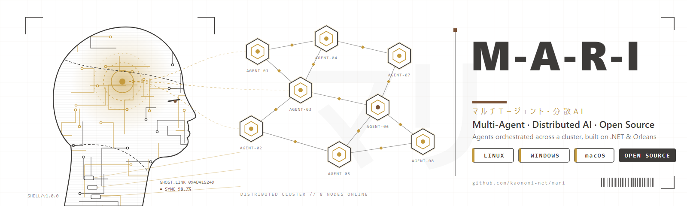

An open-source framework to build, orchestrate and scale multi-agent AI systems across a distributed cluster.
AI is no longer a single model answering a single question. Real value comes from many specialised agents, each doing one thing well, that collaborate, react to events and share what they learn. Building that by hand means fighting with distribution, scheduling, state, failures and scaling, long before you write any business logic.
M-A-R-I takes care of that foundation. Built on .NET 8 and Microsoft Orleans, it gives you a proven distributed runtime and a simple, fluent way to describe how your agents work together. You focus on what your agents do; M-A-R-I makes them run, together, at scale.
M-A-R-I is released under the MIT licence: free to use, modify and ship in commercial products. It runs on Linux, Windows and macOS, and is distributed as NuGet packages for .NET and a Python package for external agents.
M-A-R-I comes from years of work on multi-agent systems. The first version was born in 2017 in an AI lab in Brussels, created by Jerome Fortias and his friend Mickael Thumerel, and it has since grown into the framework we share today. M-A-R-I carries Micka's legacy forward, as an open tool for everyone building the next generation of distributed AI.
Explore the source code, documentation and samples, then join the community:
View on GitHub Packages on NuGet
Kaonomi.net: Distributed AI and meta AI. Have a project in mind or want to contribute? Open an issue on GitHub or contact us.